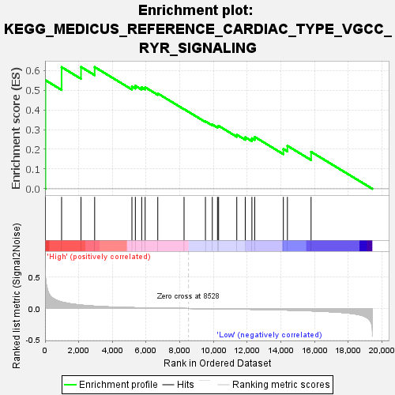
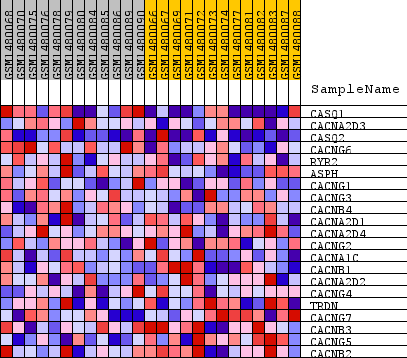
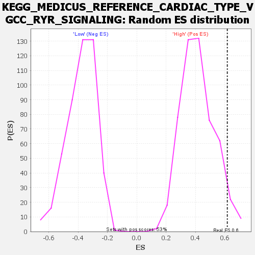

| Dataset | WG6v3.CYGB.cls#High_versus_Low.CYGB.cls#High_versus_Low_repos |
| Phenotype | CYGB.cls#High_versus_Low_repos |
| Upregulated in class | High |
| GeneSet | KEGG_MEDICUS_REFERENCE_CARDIAC_TYPE_VGCC_RYR_SIGNALING |
| Enrichment Score (ES) | 0.617331 |
| Normalized Enrichment Score (NES) | 1.4775579 |
| Nominal p-value | 0.041509435 |
| FDR q-value | 0.40296742 |
| FWER p-Value | 1.0 |

| SYMBOL | TITLE | RANK IN GENE LIST | RANK METRIC SCORE | RUNNING ES | CORE ENRICHMENT | |
|---|---|---|---|---|---|---|
| 1 | CASQ1 | CASQ1 | 24 | 0.500 | 0.5501 | Yes |
| 2 | CACNA2D3 | CACNA2D3 | 983 | 0.105 | 0.6165 | Yes |
| 3 | CASQ2 | CASQ2 | 2135 | 0.055 | 0.6173 | Yes |
| 4 | CACNG6 | CACNG6 | 2945 | 0.037 | 0.6168 | No |
| 5 | RYR2 | RYR2 | 5157 | 0.014 | 0.5182 | No |
| 6 | ASPH | ASPH | 5360 | 0.013 | 0.5218 | No |
| 7 | CACNG1 | CACNG1 | 5736 | 0.011 | 0.5141 | No |
| 8 | CACNG3 | CACNG3 | 5942 | 0.010 | 0.5142 | No |
| 9 | CACNB4 | CACNB4 | 6691 | 0.007 | 0.4829 | No |
| 10 | CACNA2D1 | CACNA2D1 | 8250 | 0.001 | 0.4036 | No |
| 11 | CACNA2D4 | CACNA2D4 | 9519 | -0.003 | 0.3416 | No |
| 12 | CACNG2 | CACNG2 | 9927 | -0.004 | 0.3256 | No |
| 13 | CACNA1C | CACNA1C | 10235 | -0.006 | 0.3159 | No |
| 14 | CACNB1 | CACNB1 | 10301 | -0.006 | 0.3189 | No |
| 15 | CACNA2D2 | CACNA2D2 | 11379 | -0.010 | 0.2742 | No |
| 16 | CACNG4 | CACNG4 | 11882 | -0.012 | 0.2612 | No |
| 17 | TRDN | TRDN | 12277 | -0.013 | 0.2557 | No |
| 18 | CACNG7 | CACNG7 | 12444 | -0.014 | 0.2628 | No |
| 19 | CACNB3 | CACNB3 | 14143 | -0.024 | 0.2018 | No |
| 20 | CACNG5 | CACNG5 | 14384 | -0.026 | 0.2179 | No |
| 21 | CACNB2 | CACNB2 | 15788 | -0.038 | 0.1873 | No |

